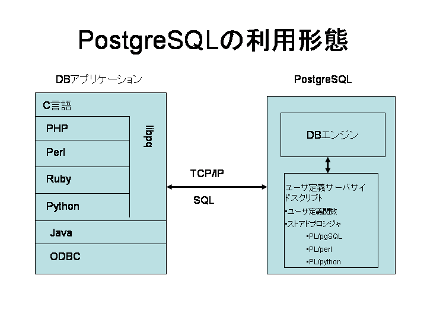
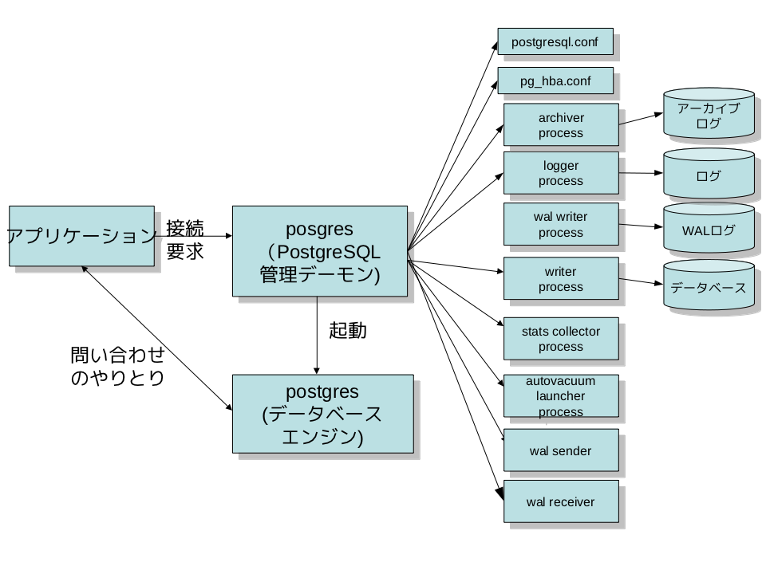
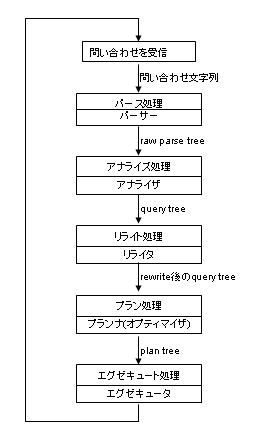
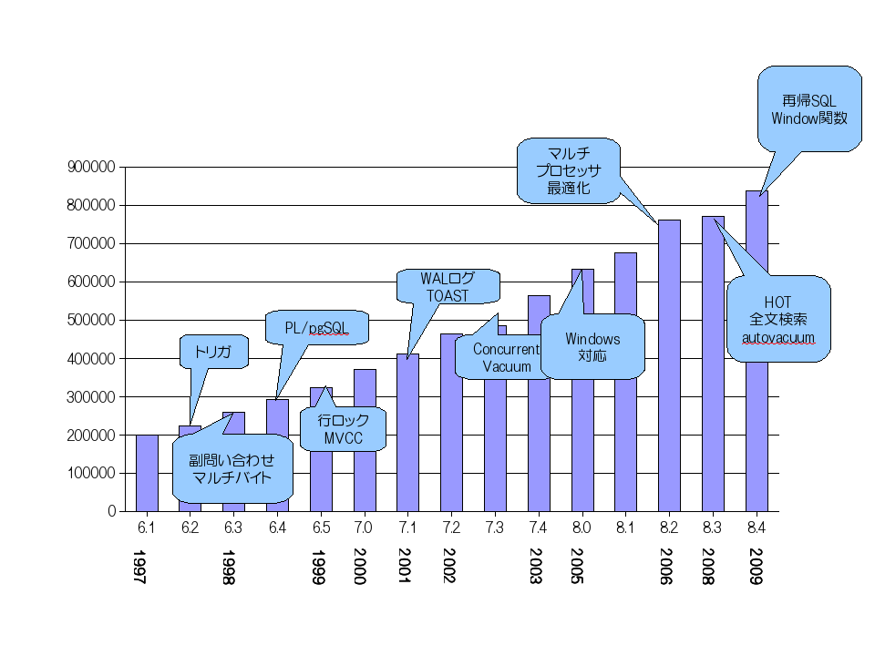

<!DOCTYPE html PUBLIC "-//W3C//DTD XHTML 1.0 Transitional//EN" "http://www.w3.org/TR/xhtml1/DTD/xhtml1-transitional.dtd"><html xmlns="http://www.w3.org/1999/xhtml" xml:lang="ja" lang="ja" dir="ltr">
<head>
<meta http-equiv="content-type" content="text/html;charset=iso-2022-jp" />
<link rev=made href="mailto:ishii@sraoss.co.jp" />
<title>PostgreSQL$B$N9=B$$H%=!<%9%D%j!<(B</title>
<body>
<!-- hhmts start -->
Last modified: Fri Oct 21 07:53:48 JST 2011
<!-- hhmts end -->

<h1>PostgreSQL$B$N9=B$$H%=!<%9%D%j!<(B</h1>
<p>
$B$3$N%Z!<%8$G$O!"(BPostgreSQL$B$NA4BN9=B$$H!"%=!<%9%D%j!<$N35MW$r@bL@$7$^$9!#(B
$BA0Ds$H$7$F$$$k%P!<%8%g%s$O(BPostgreSQL 8.4.x$B$G$9!#(B
$B$[$+$N%P!<%8%g%s$G$O!"B?>/:YIt$,0c$C$F$$$k$+$bCN$l$^$;$s!#(B
</p>

<h2>PostgreSQL$B$NMxMQ7ABV(B</h2>
<p>
<a href="1.png"></a>
PostgreSQL$B$O$$$o$f$k%/%i%$%"%s%H(B/$B%5!<%P7?$N%"!<%-%F%/%A%c$r:NMQ$7$F$$$^$9!#(B
PostgreSQL$B$rMxMQ$9$k%"%W%j%1!<%7%g%s$O!"$^$:Dj$a$i$l$?%W%m%H%3%k$K$7$?$,$$!"(BINET$B$^$?$O(BUnix$B%I%a%$%s%=%1%C%H$rDL$8$F(BPostgreSQL$B$N%5!<%P$K@\B3$7$J$1$l$P$J$j$^$;$s!#(B
</p>

<p>
$B!V%9%?%s%I%"%m!<%s!&%P%C%/%(%s%I!W$H$$$&MxMQ7ABV$b$"$j!"(BPostgreSQL$B$N%G!<%?%Y!<%9%(%s%8%s$rD>@\5/F0$9$k$3$H$b2DG=$G$9$,!"%G!<%?%Y!<%9!&%/%i%9%?(B($BB>$N%G!<%?%Y!<%9$G$O!V%$%s%9%?%s%9!W$H8F$P$l$k$b$N$KAjEv(B)$B$N=i4|2=$+!"6[5^%a%$%s%F%J%s%9;~$K$7$+;HMQ$5$l$J$$$N$G!"IaDL$O%/%i%$%"%s%H(B/$B%5!<%P$G(BPostgreSQL$B$rMxMQ$9$k$H;W$C$F$+$^$$$;$s!#(B
</p>
<p>
PostgreSQL$B$G$O!"%/%i%$%"%s%H$r(B<b>$B%U%m%s%H%(%s%I(B</b>(frontend)$B!"%5!<%P$r(B<b>$B%P%C%/%(%s%I(B</b>(backend)$B$H8F$S$^$9!#(B
$B%P%C%/%(%s%I$OJ#?t$N%W%m%;%9$+$i9=@.$5$l$F$$$^$9$,!"$=$l$K$D$$$F$O$3$N8e$G@bL@$7$^$9!#(B
</p>
<p>
$B%U%m%s%H%(%s%I$H%P%C%/%(%s%I$NDL?.%W%m%H%3%k$O!"(BPostgreSQL$B$N%I%-%e%a%s%H!V%U%m%s%H%(%s%I(B/$B%P%C%/%(%s%I%W%m%H%3%k!W$K>\$7$/=q$+$l$F$$$^$9!#(B
$B4pK\E*$K$OLd$$9g$o$;(B(SQL$BJ8(B)$B$r%U%m%s%H%(%s%I$+$i%P%C%/%(%s%I$KAw?.$7!"$=$N7k2L$,J#?t$N%Q%1%C%H$KJ,$+$l$F%P%C%/%(%s%I$+$i%U%m%s%H%(%s%I$KJV$C$F$/$k$h$&$J;E3]$1$K$J$C$F$$$^$9!#(B
<a href="../Networking/vol21/index.html">PostgreSQL$B$H%M%C%H%o!<%/%W%m%0%i%_%s%0(B(1/2)</a>
$B$H(B
<a href="../Networking/vol22/index.html">PostgreSQL$B$H%M%C%H%o!<%/%W%m%0%i%_%s%0(B(2/2)</a>
$B$b;29M$^$G$K$*FI$_D:$1$l$P$H;W$$$^$9!#(B
</p>
<p>
$B@\B3$N3+;O=hM}$d%(%i!<=hM}$J$I!"$$$m$$$m$J$3$H$r$d$i$J$1$l$P$J$i$J$$$N$G!"(BPostgreSQL$B$N%W%m%H%3%k=hM}$O7k9=J#;($K$J$j$^$9!#(B
$B$3$l$r$9$Y$F$N%U%m%s%H%(%s%I$G<BAu$9$k$N$OBgJQ$J$N$G!"(BC$B8@8l$G=q$+$l$?(B<b>libpq</b>$B$H$$$&6&DL%i%$%V%i%j$,Ds6!$5$l$F$*$j!"$3$l$r;H$C$F4JC1$K%P%C%/%(%s%I$H$NDL?.$r9T$&$3$H$,$G$-$^$9!#(B
PostgreSQL$B$O(BPerl$B$d(BPHP$B$J$I!"(BC$B8@8l0J30$N%W%m%0%i%_%s%08@8l$r%5%]!<%H$7$F$$$^$9$,!"$3$l$i$OFbIt$G(Blibpq$B$r8F$S=P$7$F$$$^$9!#(B
</p>
<p>
libpq$B$r;H$o$:$KFH<+$K(BPostgreSQL$B$H$NDL?.$r9T$&%i%$%V%i%j$b$"$j$^$9!#(B
$BBeI=E*$J$b$N$,(BJava$B$G!"(BPostgreSQL$BMQ$N(BJDBC$B%I%i%$%P$O!"FH<+$K%M%C%H%o!<%/DL?.$r9T$&$3$H$K$h$j!"(Blibpq$B$KMj$k$3$H$J$/<BAu$5$l$F$$$^$9!#(B
ODBC$B$bF1$8J}K!$r$H$C$F$$$^$9!#(B
</p>
<p>
$B0lJ}%P%C%/%(%s%I$NJ}$O!"Cf?4$H$J$k$N$,%G!<%?%Y!<%9=hM}$r<B9T$9$k(B<b>$B%G!<%?%Y!<%9%(%s%8%s(B</b>$B$G$9!#(B
$B%G!<%?%Y!<%9%(%s%8%s$K$O%f!<%6$,:n@.$7$?%"%W%j%1!<%7%g%s$r<B9T$9$k5!G=$,$"$j$^$9!#(B
$B$3$N5!G=$r;H$C$F!"%f!<%6$O=@Fp$K(BPostgreSQL$B$N5!G=$r3HD%$G$-$^$9!#(B
$BNI$/MxMQ$5$l$k$N$O!"$[$+$N%G!<%?%Y!<%9$G8@$&$H$3$m$N!V%9%H%"%I%W%m%7%8%c!W$G!"(BPostgreSQL$B$G$O(B<b>$B%f!<%6Dj5A4X?t(B</b>$B$H8F$S$^$9!#8@8lJL$K0J2<$N$h$&$J$b$N$,MxMQ$G$-$^$9!#(B
</p>

<table border>
<tr><th>$B8@8l(B</th><th>$B%f!<%6Dj5A4X?t=hM}7O(B</th></tr>
<tr>
 <td>C</td><td>C$B4X?t(B</td>
</tr>
<tr>
 <td>SQL</td><td>SQL$B4X?t(B</td>
</tr>
<tr>
 <td>Oracle$B$N(BPL/SQL$B$K;w$?FH<+8@8l(B</td><td>PL/pgSQL</td>
</tr>
<tr>
 <td>Perl</td><td>PL/Perl</td>
</tr>
<tr>
 <td>Python</td><td>PL/Python</td>
</tr>
</table>
</p>
<p>
PostgreSQL$B$G$O!"%f!<%6$,FH<+$K%f!<%6Dj5A4X?t$N=hM}7O$rDj5A$9$k$3$H$,$G$-$^$9!#(B
$B$=$3$G3F<o8@8lMQ$N%5!<%P%5%$%I%9%/%j%W%H$,%5!<%I%Q!<%F%#!<$K$h$C$FDs6!$5$l$F$$$^$9!#(B
$B<g$J$b$N$H$7$F$O!"(BRuby, Java, PHP$B$J$I$,$"$j$^$9!#(B
</p>

<h2>PostgreSQL$B$N9=B$(B</h2>
<p>
<a href="2.png"></a>
$B$=$l$G$O!"$b$&>/$7>\$7$/(BPostgreSQL$B$N9=B$$r8+$F$_$^$7$g$&!#(B
</p>
<p>
$B%P%C%/%(%s%IB&$O$$$/$D$+$N%W%m%;%9$+$i9=@.$5$l$F$$$^$9!#(B
</p>
<h3>postgres($B>oCs%W%m%;%9(B)</h3>
<p>
$B%P%C%/%(%s%I$r4IM}$9$k>oCs%W%m%;%9$G$9!#(Bpostgres$B$O(BUNIX$B%I%a%$%s%=%1%C%H$H(BTCP/IP$B$N(B5432$BHV$N%]!<%H$r(Blisten$B$7$F$*$j!"%U%m%s%H%(%s%I$,$3$3$K@\B3$9$k$N$rBT$A<u$1$F$$$^$9(B
(Windows$B$J$I!"0lIt$N%W%i%C%H%U%)!<%`$G$O(BTCP/IP$B$N$_(B)$B!#(B
$B$J$*!"BT$A<u$1$k%]!<%HHV9f$O(BPostgreSQL$B$N%a%$%s@_Dj%U%!%$%k$G$"$k(B<b>postgresql.conf</b>$B$K$h$C$FJQ$($i$l$^$9!#(B
</p>
<p>
$B%U%m%s%H%(%s%I$,(Bpostgres$B$K@\B3$9$k$H(Bfork(2)$B$K$h$C$F;R%W%m%;%9$r@8@.$7$^$9!#(Bfork(2)$B$r;}$?$J$$(BWindows$B%W%m%C%H%U%)!<%`$G$O!"(B
CreateProcess()$B$r;H$C$F?7$?$K%W%m%;%9$r@8@.$7$^$9!#(B
$B$3$N>l9g$O(Bfork(2)$B$H0c$C$F<+F0E*$K?F%W%m%;%9$N%G!<%?$r0z7Q$2$J$$$N$G!"6&M-%a%b%j$rMxMQ$7$F?F%W%m%;%9$N%G!<%?$r0z7Q$.$^$9!#(B
</p>

<h3>postgres($B;R%W%m%;%9(B)</h3>
<p>
$B;R%W%m%;%9$G$O!"$^$:%;%-%e%j%F%#%]%j%7!<%U%!%$%k$G$"$k(B<b>pg_hba.conf</b>$B$K$h$C$F@\B3$N2DH]$,%A%'%C%/$5$l$^$9!#(B
$B%]%j%7!<$K$h$j!"FCDj$N(BIP$B%"%I%l%9$d%M%C%H%o!<%/$+$i$N@\B3$r5qH]$7$?$j!"FCDj%f!<%6$d%G!<%?%Y!<%9$N$_@\B3$r5v2D$9$k$3$H$b$G$-$^$9!#(B
</p>
<p>
postgres$B$O%U%m%s%H%(%s%I$+$i$NLd$$9g$o$;$r<u$1<h$C$F$O%G!<%?%Y!<%9$r8!:w$7$F7k2L$rJV$7$?$j!"%G!<%?%Y!<%9$N99?7$r9T$C$?$j$7$^$9!#(B
$B$^$?!"99?7%G!<%?$O(B<b>$B%H%i%6%s%/%7%g%s%m%0(B</b>(PostgreSQL$B$G$O(B<b>WAL$B%m%0(B</b>$B$H8F$S$^$9(B)$B$H8F$P$l$kFCJL$J%U%!%$%k$K5-O?$5$l!"K|$,0lDdEE$J$I$G%G!<%?%Y!<%9$NIT@09g$,5/$-$?:]$K$O%j%+%P%j=hM}$r9T$&$?$a$K;HMQ$5$l$^$9!#(B
$B99$KE,Ev$J%?%$%_%s%0$G%"!<%+%$%V%m%0NN0h$K0\$5$l!"%j%+%P%j=hM}$KHw$($FJ]B8$,2DG=$K$J$C$F$$$^$9!#(B
$B$3$l$i$N=hM}$N0lIt$O<!$K@bL@$9$kJL%W%m%;%9$,<B9T$7$^$9!#(B
</p>

<h3>$B$=$NB>$N%W%m%;%9(B</h3>
<p>
postgres$B0J30$K$$$/$D$+Jd=u%W%m%;%9$,$"$j$^$9!#(B
$B$3$l$i$O$9$Y$F>oCs%W%m%;%9$N(Bpostgres$B$+$i5/F0$5$l$k%W%m%;%9$G$9!#(B
</p>
<h4>

<h4>$B%i%$%?!<!&%W%m%;%9(B</h4>
<p>
$B!V%i%$%?!<!&%W%m%;%9!W(B(writer process)$B$O!"6&M-%a%b%j>e$N%P%C%U%!$r:GE,$J%?%$%_%s%0$G%O!<%I%G%#%9%/$K=q=P$7$^$9!#(B
$B$3$l$K$h$C$F!"%A%'%C%/%]%$%s%H$N:]$KBgNL$N%G%#%9%/=q$-9~$_$,5/$-$F%Q%U%)!<%^%s%9$,Nt2=$9$k$3$H$rKI$.!"0BDj$7$?%Q%U%)!<%^%s%9$,0];}$G$-$^$9!#(B
$B%P%C%/%0%i%&%s%I!&%i%$%?!<!&%W%m%;%9$O0lEY5/F0$5$l$?$i0J8e>oCs$7$^$9$,!"(B
$B$:$C$HF0$-B3$1$F$$$k$o$1$G$O$J$/!"(Bpostgresql.conf$B$N(Bbgwriter_delay$B$G5,Dj$5$l$k;~4V(B($B%G%U%)%k%H$G$O(B200$B%_%jIC(B)$B5Y;_$7$F$O$^$?F0$/$H$$$&F0:n$r7+$jJV$7$^$9!#(B
</p>
<p>
$B%i%$%?!<%W%m%;%9$N$b$&0l$D$N=EMW$J;E;v$O!"(B<b>$B%A%'%C%/%]%$%s%H(B</b>$B=hM}$rDj4|E*$K<B9T$9$k$3$H$G$9!#(B
</p>
<p>
$B%A%'%C%/%]%$%s%H$O!"Dj4|E*$K6&M-%a%b%j>e$N%P%C%U%!$NFbMF$r%G!<%?%Y!<%9%U%!%$%k$K=q=P$7!"%a%b%j$H%G%#%9%/$N>uBV$r0lCW$5$;$^$9!#(B
$B$3$l$K$h$C$F!"%7%9%F%`$,%/%i%C%7%e$7$?:]$K!"(BWAL$B$+$i$N%j%+%P%j$KMW$9$k;~4V$rC;=L$7$^$9!#(B
$B$^$?!"(BWAL$B$,L58B$KA}$($k$N$rKI$.$^$9!#(B
</p>
<p>
$B%A%'%C%/%]%$%s%H$O(Bpostgresql.conf$B$N(Bcheckpoint_segments$B!"(Bcheckpoint_timeout$B$G;XDj$5$l$k%?%$%_%s%0$G<+F0E*$K<B9T$5$l$^$9!#(B
</p>

<h4>WAL$B%i%$%?!<%W%m%;%9(B</h4>
<p>
WAL$B%i%$%?!<%W%m%;%9$O!"(BPostgreSQL 8.3$B$GF3F~$5$l$?Hf3SE*?7$7$$%W%m%;%9$G$9!#(B
WAL$B%i%$%?!<%W%m%;%9(B(WAL writer process)$B$O!"6&M-%a%b%j>e$N(BWAL$B%P%C%U%!$r:GE,$J%?%$%_%s%0$G%O!<%I%G%#%9%/$K=q=P$7$^$9!#(B
$B$3$l$K$h$C$F!"%P%C%/%(%s%I%W%m%;%9$,<+$i(BWAL$B%P%C%U%!$N=q$-=P$7$r9T$J$&IiC4$r7Z8:$7!"%Q%U%)!<%^%s%9$r8~>e$5$;$^$9!#(B
$B$^$?!"(B<b>$BHsF14|%3%_%C%H(B</b>$B$,M-8z$J>l9g!"0lDj;~4V$N$&$A$K(BWAL$B%P%C%U%!$NFbMF$,(BWAL$B%m%0$K=q$+$l$k$3$H$rJ]>Z$9$kLr3d$b$"$j$^$9!#(B
</p>

<h4>$B%"!<%+%$%P!<%W%m%;%9(B</h4>
<p>
$B%"!<%+%$%P!<%W%m%;%9$O!"(BWAL$B%m%0$r(B<b>$B%"!<%+%$%V%m%0(B</b>$B$K0\$7$^$9!#(B
<b>$B%Y!<%9%P%C%/%"%C%W(B</b>$B$H%"!<%+%$%V%m%0$rJ]B8$7$F$*$1$P!"%G!<%?%Y!<%9$r3JG<$7$?%G%#%9%/$,40A4$KGK2u$5$l$F$bD>6a$N>uBV$KLa$k$3$H$,$G$-$^$9!#(B
</p>

<h4>$BE}7W>pJs<}=8%W%m%;%9(B</h4>
<p>
$BE}7W>pJs<}=8%W%m%;%9(B(stats collector process)$B$O!"%F!<%V%k$X$N%"%/%;%92s?t$d%G%#%9%/$X$N%"%/%;%92s?t$J$I$N>pJs$r<}=8$9$k%W%m%;%9$G$9!#(B
$B$3$3$G<}=8$5$l$?>pJs$O!"(Bautovacuum$B$,MxMQ$9$kB>!"%G!<%?%Y!<%9$N4IM}<T$,;2>H$7$F%G!<%?%Y!<%9$N4IM}$KLrN)$F$k$?$a$^$9!#(B
</p>

<h4>$B%m%,!<%W%m%;%9(B</h4>
<p>
$B%m%,!<%W%m%;%9(B(logger process)$B$O!"(BPostgreSQL$B$N3hF0>uBV$r=PNO$9$k%m%0(B(WAL$B$N$3$H$G$O$"$j$^$;$s(B)$B$r%U%!%$%k$K=q=P$7$?$j!";XDj$5$l$?4V3V$G%m!<%F!<%H$5$;$k=hM}$r9T$J$$$^$9!#(B
</p>

<h4>autovacuum$B5/F0%W%m%;%9(B</h4>
<p>
autovacuum$B5/F0%W%m%;%9(B(autovacuum launcher process)$B$O!"<+F0(BVACUMM$B%W%m%;%9$N5/F0$r>oCs(Bposgres$B%W%m%;%9$K0MMj$7$^$9!#(B
$B<+J,<+?H$G$O(BVACUMM$B%W%m%;%9$N5/F0$O9T$J$$$^$;$s!#$3$l$O$h$j?.Mj@-$r8~>e$5$;$k$?$a$G$9!#(B
</p>

<h2>$B%P%C%/%(%s%I$N=hM}$NN.$l(B</h2>
<p>

$B<!$K!"%G!<%?%Y!<%9%(%s%8%s$G$"$k(Bpostgres$B$N;R%W%m%;%9$N=hM}$N35MW$r8+$F$_$^$7$g$&!#(B
$B0J8e$3$N%W%m%;%9$r(B<b>$B%P%C%/%(%s%I%W%m%;%9(B</b>$B$J$$$7!"C1$K(B<b>$B%P%C%/%(%s%I(B</b>$B$H8F$V$3$H$K$7$^$9!#(B
$B$J$*!"%P%C%/%(%s%I$N%a%$%s4X?t$O(B PostgresMain (tcop/postgres.c)$B$G$9!#(B
<ol>
<li>$B%U%m%s%H%(%s%I$+$iAw$i$l$F$-$?Ld$$9g$o$;(B(SQL$BJ8(B)$B$r<u?.(B
<p>

<li>
<p>
SQL$BJ8$OC1$J$kJ8;zNs$J$N$G!"$=$N$^$^$G$O%3%s%T%e!<%?=hM}$K$O8~$$$F$$$^$;$s!#(B
$B$=$3$GFbItE*$K07$$$d$9$$(B<b>$B%Q!<%9%D%j!<(B</b>(parse tree)$B$N7A$KJQ49$7$^$9!#(B
$B$3$3$G$N=hM}$O!V%Q!<%9=hM}!W$H8F$P$l!"%Q!<%9=hM}$r9T$&%b%8%e!<%k$r(B<b>$B%Q!<%5(B</b>(parser)$B$H8F$S$^$9!#(B
</p>
<p>
$B$3$NCJ3,$G$O!"J8;zDL$jLd$$9g$o$;J8;zNs$+$iF@$i$l$k>pJs$N$_$r;HMQ$7$^$9!#(B
$B$7$?$,$C$F!"J8K!E*$K4V0c$$$N$J$$8B$j!"B8:_$7$J$$%F!<%V%k$r(BSELECT$B$7$h$&$H$7$F$b%(%i!<$K$J$j$^$;$s!#(B
$B$3$NCJ3,$N%Q!<%9%D%j!<$O(B<b>$B%m!<%Q!<%9%D!<%j!<(B</b>(raw parse tree)$B$H$b8F$P$l$^$9!#(B
$B%Q!<%9=hM}$N%(%s%H%j%]%$%s%H$O(B raw_parser (parser/parser.c) $B$G$9!#(B
</p>

<li>
<p>
$B%Q!<%9%D%j!<$r2r@O$7!"(B<b>$B%/%(%j%D%j!<(B</b>(query tree)$B$KJQ49$7$^$9!#(B
$B$3$N$H$-!"%G!<%?%Y!<%9$r%"%/%;%9$7$F;XDj$5$l$?%F!<%V%k$,<B:]$KB8:_$9$k$+$I$&$+%A%'%C%/$7!"B8:_$9$l$P%F!<%V%kL>$+$i(BOID$B$KJQ49$9$k$J$I$N=hM}$,9T$o$l$^$9!#(B
$B$3$3$G$N=hM}$O(B<b>$B%"%J%i%$%:=hM}(B</b>$B$H8F$P$l!"%"%J%i%$%:=hM}$r9T$&%b%8%e!<%k$r(B<b>$B%"%J%i%$%6(B</b>(analyzer)$B$H8F$S$^$9!#(B
$B$J$*!"(BPostgreSQL$B$N%=!<%9%3!<%I$G%Q!<%9%D%j!<$H8@$($P!"%/%(%j%D%j!<$N$3$H$r;X$9$3$H$,B?$$$h$&$G$9!#(B
$B%"%J%i%$%:=hM}$N%(%s%H%j%]%$%s%H$O(B parse_analyze (parser/analyze.c) $B$G$9!#(B
</p>
<li>
<p>
PostgreSQL$B$G$O!"(BVIEW$B$d(BRULE$B$r%/%(%j$r=q$-49$($k$3$H$K$h$C$F<BAu$7$F$$$^$9!#(B
$B$b$7I,MW$J$i$P$3$NCJ3,$G%/%(%j$r=q$-49$($^$9!#(B
$B$3$3$G$N=hM}$O(B<b>$B%j%i%$%H=hM}(B</b>$B$H8F$P$l!"%j%i%$%H=hM}$r9T$&%b%8%e!<%k$r(B<b>$B%j%i%$%?(B</b>(rewriter)$B$H8F$S$^$9!#(B
$B%j%i%$%H=hM}$N%(%s%H%j%]%$%s%H$O(B QueryRewrite (rewrite/rewriteHandler.c) $B$G$9!#(B
</p>
<li>
<p>
$B%/%(%j%D%j!<$r2r@O$7!"<B:]$KLd$$9g$o$;$r<B9T$9$k$?$a$N(B<b>$B%W%i%s%D%j!<(B</b>(plan tree)$B$r:n@.$7$^$9!#(B
$B$3$3$G$N=hM}$O!V%W%i%s=hM}!W$H8F$P$l$^$9$,!"$b$C$H$b<B9T;~4V$,C;$/$F:Q$_$=$&$J%W%i%s%D%j!<$r:n@.$9$k$3$H$,Hs>o$KBg@Z$G$9!#(B
$B$=$N$?$a!"$3$N=hM}$O(B<b>$B%/%(%j%*%W%F%#%^%$%:(B</b>(query optimize:$B:GE,2=(B)$B$J$$$7C1$K(B<b>$B%*%W%F%#%^%$%:(B</b>$B$H8F$P$l$k$3$H$b$"$j$^$9!#(B
$B$3$&$7$?=hM}$r9T$&%b%8%e!<%k$r(B<b>$B%/%(%j%*%W%F%#%^%$%6(B</b>(query optimizer)$B$J$$$7!"C1$K(B<b>$B%*%W%F%#%^%$%6(B</b>$B$H8F$S$^$9!#(B($B$"$k$$$O(B<b>$B%W%i%s%J(B</b>(planner)$B$H8F$V$3$H$b$"$j$^$9(B)$B!#(B
$B%W%i%s=hM}$N%(%s%H%j%]%$%s%H$O(B standard_planner (optimizer/plan/planner.c) $B$G$9!#(B
</p>
<li>
<p>
$B%W%i%s%D%j!<$K=>$$!"Ld$$9g$o$;$r<B9T$7$^$9!#(B
$B$3$3$G$N=hM}$O(B<b>$B%(%0%<%-%e!<%H=hM}(B</b>$B$H8F$P$l!"%(%0%<%-%e!<%H=hM}$r9T$&%b%8%e!<%k$r(B<b>$B%(%0%<%-%e!<%?(B</b>(executor)$B$H8F$S$^$9!#(B
$B%(%0%<%-%e!<%?=hM}$N%(%s%H%j%]%$%s%H$O(B ExecutorRun (executor/execMain.c) $B$G$9!#(B
</p>
<li><p>$B<B9T7k2L$r%U%m%s%H%(%s%I$KAw?.$7$^$9!#(B</p>
<li><p>$B:F$S(B1)$B$KLa$j$^$9!#(B</p>
</ol>
</p>

<h2>PostgreSQL$B$N%=!<%9%3!<%I(B</h2>
<p>
<a href="3.png"></a>
PostgreSQL$B$N$*$*$^$+$J9=B$$,$o$+$C$?$H$3$m$G!"(BPostgreSQL$B$N%=!<%9%3!<%I$N9=B$$r8+$F$$$-$^$7$g$&!#(B
</p>
<p>
PostgreSQL$B$,8=:_$N7A$K$J$C$?$H$-$O(B20$BK|9T$[$I$@$C$?%=!<%9%3!<%I$O!":#$G$O(B80$BK|9T$rD6$($F$$$^$9!#(B
$B$3$l$[$I$NNL$K$J$k$H!"0G1@$K%3!<%I$rFI$s$G$bM}2r$9$k$N$OFq$7$$$G$7$g$&!#(B
$B$=$3$G$^$:K\9F$GBg$^$+$J%=!<%9%3!<%I$N9=B$$rM}2r$7$F$$$?$@$-$?$$$H;W$$$^$9!#(B
</p>
<h3>$B%H%C%W%l%Y%k(B</h3>
<p>
PostgreSQL$B$N%=!<%9%3!<%I$rE83+$9$k$H!"%H%C%W%l%Y%k$K$OI=$N$h$&$J%U%!%$%k$d%G%#%l%/%H%j$,$"$j$^$9!#(B
$B%H%C%W%l%Y%k$G(Bconfigure;make;make install$B$r9T$J$($P!"4pK\E*$J%$%s%9%H!<%k$O$9$0$K$G$-$k$h$&$K$J$C$F$$$^$9!#(B
$B<B:]$K$O!"(BPostgreSQL$B$N%=!<%9$+$i$N%$%s%9%H!<%k$O6K$a$FMF0W$G$9!#(B
</p>

<table border>
<tr><th>$B%U%!%$%k(B/$B%G%#%l%/%H%j(B</th><th>$B@bL@(B</th></tr>
<tr>
 <td>COPYRIGHT</td><td>$BCx:n8"$NI=<((B</td>
</tr>
<tr>
 <td>GUNMakefile</td><td>$B%H%C%W%l%Y%k$N(BMakefile</td>
</tr>
<tr>
 <td>GUNMakefile.in</td><td>Makefile$B$N?w7A(B</td>
</tr>
<tr>
 <td>HISTORY</td><td>$B2~D{MzNr(B</td>
</tr>
<tr>
 <td>INSTALL</td><td>$B%$%s%9%H!<%kJ}K!$N35N,(B</td>
</tr>
<tr>
 <td>Makefile</td><td>$B%@%_!<$N(BMakefile</td>
</tr>
<tr>
 <td>README</td><td>$B35MW$N@bL@(B</td>
</tr>
<tr>
 <td>aclocal.m4</td><td>config$BMQ%U%!%$%k$N0lIt(B</td>
</tr>
<tr>
 <td>config/</td><td>config$BMQ%U%!%$%k$r3JG<$9$k%G%#%l%/%H%j(B</td>
</tr>
<tr>
 <td>configure</td><td>configure$B%U%!%$%k(B</td>
</tr>
<tr>
 <td>configure.in</td><td>configure$B%U%!%$%k$N?w7A(B</td>
</tr>
<tr>
 <td>contrib/</td><td>contribution$B%W%m%0%i%`(B</td>
</tr>
<tr>
 <td>doc/</td><td>$B%I%-%e%a%s%H%G%#%l%/%H%j(B</td>
</tr>
<tr>
 <td>src/</td><td>$B%=!<%9%G%#%l%/%H%j(B</td>
</tr>
</table>
</p>

<p>
PostgreSQL$B$NK\BN$O(Bsrc$B0J2<$K$"$j$^$9!#(B
</p>
<p>
<table border>
<tr><th>$B%U%!%$%k(B/$B%G%#%l%/%H%j(B</th><th>$B@bL@(B</th></tr>
<tr>
 <td>DEVELOPERS</td><td>$B3+H/<T8~$1$NCm<a(B</td>
</tr>
 <td>Makefile</td><td>Makefile$BK\BN(B</td>
</tr>
<tr>
 <td>Makefile.global</td><td>make$BMQ$N@_DjCM!J(Bconfigure$B$,@8@.!K(B</td>
</tr>
<tr>
 <td>Makefile.global.in</td><td>configure$B$,;HMQ$9$k(BMakefile.global$B$N?w7?(B</td>
</tr>
<tr>
 <td>Makefile.port</td><td>$B%W%i%C%H%U%)!<%`0MB8$N(Bmake$B@_DjCM!#<B:]$K$O(Bmakefile/Makefile.$B%W%i%C%H%U%)!<%`$X$N%j%s%/!J(Bconfigure$B$,@8@.!K(B</td>
</tr>
<tr>
<td>Makefile.shlib</td><td>$B6&M-%i%$%V%i%jMQ$N(BMakefile</td>
</tr>
<tr>
 <td>backend/</td><td>$B%P%C%/%(%s%I$N%=!<%90l<0(B</td>
</tr>
<tr>
 <td>bcc32.mak</td><td>Win32$B%]!<%HMQ$N(BMakefile(Borland C++$BMQ(B)</td>
</tr>
<tr>
 <td>bin/</td><td>psql$B$J$I$N(BUNIX$B%3%^%s%I$N%=!<%9(B</td>
</tr>
<tr>
 <td>include/</td><td>$B%X%C%@%U%!%$%k(B</td>
</tr>
<tr>
 <td>interfaces/</td><td>$B%U%m%s%H%(%s%I%i%$%V%i%j$N%=!<%90l<0(B</td>
</tr>
<tr>
 <td>makefiles/</td><td>$B%W%i%C%H%U%)!<%`0MB8$N(Bmake$B@_DjCM(B</td>
</tr>
<tr>
 <td>nls-global.mk</td><td>$B%a%C%;!<%8%+%?%m%0MQ(BMakefile$BMQ%k!<%k(B</td>
</tr>
<tr>
 <td>pl/</td><td>$B%W%m%7!<%8%c8@8l$N%=!<%9(B</td>
</tr>
<tr>
 <td>port/</td><td>$B%W%i%C%H%U%)!<%`0\?"MQ$N%=!<%9(B</td>
</tr>
<tr>
 <td>template/</td><td>$B%W%i%C%H%U%)!<%`0MB8$N@_DjCM(B</td>
</tr>
<tr>
 <td>test/</td><td>$B3F<o%F%9%H%D!<%k(B</td>
</tr>
<tr>
 <td>timezone/</td><td>$B%?%$%`%>!<%s$N<BAu(B</td>
</tr>
<tr>
 <td>tools/</td><td>$B3+H/MQ$N3F<o%D!<%k!"%I%-%e%a%s%H(B</td>
</tr>
<tr>
 <td>tutorial/</td><td>$B%A%e!<%H%j%"%k(B</td>
</tr>
<tr>
 <td>win32.mak</td><td>Win32$B%]!<%HMQ$N(BMakefile(Visual C++$BMQ(B)</td>
</td>
</table>
</p>

<p>
$B$3$NCf$GCf?4$H$J$k$N$O(Bbackend, bin, interfaces$B%G%#%l%/%H%j$G$9!#(B
backend$B$O%P%C%/%(%s%I$KBP1~$7!"(Bbin$B$H(Binterfaces$B$O%U%m%s%H%(%s%I$KBP1~$7$^$9!#(B
</p>
<p>
bin$B$K$O!"(Bpsql$B$d(Binitdb, pg_dump$B$J$I$N3F<o%D!<%k$N%=!<%9$,$"$j$^$9!#(B
interfaces$B$K$O!"(BPostgreSQL$B$N(BC$B8@8l%i%$%V%i%j$G$"$k(Blibpq$B!"$=$7$F(BC$B8@8l$K(BSQL$B$rKd$a9~$`$3$H$,$G$-$k(Becpg$B%3%^%s%I$N%=!<%9$,$"$j$^$9!#(B
</p>
<p>
backend$B%G%#%l%/%H%j$N9=B$$r<($7$^$9!#(B
</p>

<p>
<table border>
<tr><th>$B%U%!%$%k(B/$B%G%#%l%/%H%j(B</th><th>$B@bL@(B</th></tr>
<tr>
 <td>Makefile</td><td>makefile</td>
</tr>

<tr>
 <td>access/</td><td>$B3F<o%"%/%;%9%a%=%C%I!J0J2<%5%V%G%#%l%/%H%j!K(B
<br>
common($B6&DL4X?t(B)$B!"(Bgin(Generalized Inverted Index$B$H$$$&HFMQE*$JE>CV%$%s%G%C%/%9%a%=%C%I(B)$B!"(B
gist(Generalized Search Tree $B$H$$$&HFMQE*$J%$%s%G%C%/%9%a%=%C%I(B)$B!"(B
hash($B%O%C%7%e%$%s%G%C%/%9(B)$B!"(Bheap($B%R!<%W%"%/%;%94X?t(B)$B!"(B
index($B%$%s%G%C%/%9%"%/%;%94X?t(B)$B!"(B
nbtree(Btree$B%$%s%G%C%/%9(B)$B!"(Btransam($B%H%i%s%6%/%7%g%s=hM}(B)
</td>
</tr>
<tr>
 <td>bootstrap/</td><td>$B%G!<%?%Y!<%9=i4|2=!J(Binitdb$B$N$H$-!K$N=hM}(B</td>
</tr>
<tr>
 <td>catalog/</td><td>$B%7%9%F%`%+%?%m%0$N%O%s%I%j%s%0(B</td>
</tr>
<tr>
 <td>commands/</td><td>SELECT/INSERT/UPDATE/DELETE$B0J30$N(BSQL$BJ8$r<B9T$9$k=hM}(B</td>
</tr>
<tr>
 <td>executor/</td><td>$B%(%0%<%-%e!<%?(B($BLd$$9g$o$;$N<B9T(B)</td>
</tr>
<tr>
 <td>lib/</td><td>$B6&DL4X?t(B</td>
</tr>
<tr>
 <td>libpq/</td><td>$B%U%m%s%H%(%s%I!?%P%C%/%(%s%IDL?.$N%P%C%/%(%s%IB&=hM}(B</td>
</tr>
<tr>
 <td>main/</td><td>$B$9$Y$F$N(Bpostgres$BMQ$N%a%$%s(B</td>
</tr>
<tr>
 <td>nodes/</td><td>$B%Q!<%9%D%j!<A`:n4X?t(B</td>
</tr>
<tr>
 <td>optimizer/</td><td>$BLd$$9g$o$;%*%W%F%#%^%$%6(B</td>
</tr>
<tr>
 <td>parser/</td><td>SQL$B%Q!<%5(B</td>
</tr>
<tr>
 <td>port/</td><td>$B%W%i%C%H%U%)!<%`0MB8%3!<%I(B</td>
</tr>
<tr>
 <td>postmaster/</td><td>postmaster($B>oCs(Bpostgres)$B$N%a%$%s(B</td>
</tr>

<tr>
 <td>regex/</td><td>$B@55,I=8==hM}(B</td>
</tr>
<tr>
 <td>rewrite/</td><td>$B%k!<%k$H%S%e!<MQ$NLd$$9g$o$;=q$-49$(=hM}(B</td>
</tr>

<tr>
<td>storage/</td><td>$B6&M-%a%b%j!"%G%#%9%/>e$N%9%H%l!<%8!"%P%C%U%!$J$I!"$9$Y$F$N(B1$B<!(B/2$B<!5-214IM}(B($B0J2<%5%V%G%#%l%/%H%j(B)
<br>
  buffer/($B%P%C%U%!4IM}(B)$B!"(B
file/($B%U%!%$%k%"%/%;%9(B)$B!"(Bfreespace/(Fee Space Map$B4IM}(B)
ipc/($B%W%m%;%94VDL?.(B)$B!"(Blarge_object/($B%i!<%8%*%V%8%'%/%H%"%/%;%94X?t(B)$B!"(B
lmgr/($B%m%C%/%^%M!<%8%c(B)$B!"(Bpage/($B%Z!<%8%"%/%;%94X?t(B)$B!"(B
smgr/($B%9%H%l!<%8%^%M!<%8%c(B)
				 </td>
</tr>
<tr>
 <td>tcop/</td><td>postgres($B%G!<%?%Y!<%9%(%s%8%s%W%m%;%9(B)$B$N<gMWItJ,(B</td>
</tr>

<tr>
<td>utils/</td><td>$BMM!9$J%b%8%e!<%k(B($B0J2<%5%V%G%#%l%/%H%j(B)
<br>
adt/($B3F<oAH$_9~$_%G!<%?7?(B)$B!"(Bcache/($B%-%c%C%7%e4IM}(B)$B!"(B
error/($B%(%i!<=hM}4X?t(B)$B!"(Bfmgr/($B4X?t4IM}(B)$B!"(Bhash/(hash$B4X?t(B)$B!"(B
init/($B%G!<%?%Y!<%9$N=i4|2=!"(Bpostgres$B$N=i4|=hM}(B)$B!"(B
mb/($B%^%k%A%P%$%H=hM}(B)$B!"(Bmisc/($B$=$NB>(B)$B!"(Bmmgr/($B%a%b%j4IM}4X?t(B)$B!"(B
resowner/($BLd$$9g$o$;$N4V$@$1M-8z$J%G!<%?(B($B%P%C%U%!%T%s$d%F!<%V%k(B $B%m%C%/(B)$B$N4IM}(B)$B!"(B
sort/($B%=!<%H=hM}(B)$B!"(Btime/($B%H%i%s%6%/%7%g%s$N(BMVCC$B4IM}(B)
			  </td>
</tr>
</table>
</p>
<p>
$B%P%C%/%(%s%I$J$I$N%X%C%@!<%U%!%$%k$O$^$H$a$F(Binclude$B$K$"$j$^$9!#(B
backend$B$N%G%#%l%/%H%j9=B$$rH?1G$7$F$$$k$N$G$9$,!"$=$N$^$^$G$O$J$/!"4pK\E*$K%5%V%G%#%l%/%H%j$N2<$K99$K%5%V%G%#%l%/%H%j$r@_$1$k$3$H$O$7$F$$$^$;$s!#(B
$B$?$H$($P!"(Bbackend$B%G%#%l%/%H%j$N2<$N(Butils$B$N2<$K$O$5$i$K(Badt$B$J$I$N%5%V%G%#%l%/%H%j$,$"$j$^$9$,!"$3$3$G$O$=$l$O>JN,$5$l!"J?C3$J9=B$$K$J$C$F$$$^$9!#(B
</p>

<pre>
access/
bootstrap/
c.h
catalog/
commands/
dynloader.h@
executor/
fmgr.h
foreign/
funcapi.h
getaddrinfo.h
getopt_long.h
lib/
libpq/
mb/
miscadmin.h
nodes/
optimizer/
parser/
pg_config.h
pg_config.h.in
pg_config.h.win32
pg_config_manual.h
pg_config_os.h@
pg_trace.h
pgstat.h
pgtime.h
port/
port.h
portability/
postgres.h
postgres_ext.h
postgres_fe.h
postmaster/
regex/
rewrite/
rusagestub.h
snowball/
stamp-h
storage/
tcop/
tsearch/
utils/
windowapi.h
</pre>
</p>

<h3>$B%=!<%9%3!<%I$NJb$-J}(B</h3>
<p>
<h4>$B%G%P%C%,$r;H$C$F%=!<%9%3!<%I$rDI$C3]$1$F$_$h$&(B</h4>
<p>
PostgreSQL$B$N$h$&$J5pBg$J%7%9%F%`$G$O!"L\$G%=!<%9%3!<%I$NN.$l$rDI$&$N$OMF0W$G$O$"$j$^$;$s!#(B
$B$=$3$G$*4+$a$J$N$,!"(Bgdb$B$J$I$N%G%P%C%,$r;H$C$F<B:]$N%3!<%I$N<B9T$NN.$l$rDI$&$3$H$G$9!#(B
$B%G%P%C%,$H$$$&$H$7$j9~$_$9$kJ}$b$$$i$C$7$c$k$+$b$7$l$^$;$s$,!"C1$K<B9T$NN.$l$rDI$&$@$1$J$iHs>o$K4JC1$G$9!#(B
</p>
<p>
$B$?$@!"$=$N$?$a$K$OB?>/=`Hw$,I,MW$G!"(BPostgreSQL$B$r%G%P%C%0%7%s%\%kIU$G%3%s%Q%$%k$7$F$*$+$J$1$l$P$J$j$^$;$s!#DL>o(BPostgreSQL$B$r9=C[$9$k:]$K(Bconfigure$B$K(B--enable-debug$B%*%W%7%g%s$rDI2C$7$F$/$@$5$$!#(B
$B$^$?!"$G$-$l$P(Bsrc/Makefile.global$B$rJT=8$7!"(B
<pre>
CFLAGS = -O2 -Wall -Wmissing-prototypes -Wpointer-arith -Wendif-labels -fno-strict-aliasing -g
</pre>
$B$N$h$&$J9T$+$i(B"-O2"$B$r:o=|$7$F(B
<pre>
CFLAGS = -Wall -Wmissing-prototypes -Wpointer-arith -Wendif-labels -fno-strict-aliasing -g
</pre>
$B$H$7$^$9!#(B
-O2$B$O%3%s%Q%$%i$N:GE,2=%*%W%7%g%s$G!"$3$l$rM-8z$K$9$k$H!"%3!<%I$N<B9T=g=x$,F~$lBX$o$C$F$7$^$C$?$j$7$F%=!<%9$H$NBP1~$rDI$C3]$1$k$N$,:$Fq$K$J$k$3$H$,$"$k$N$G!"30$7$F$7$^$C$F$/$@$5$$!#(B
$B$b$A$m$s!"$3$&$7$F:n$C$?(BPostgreSQL$B$N<B9T%P%$%J%j$OBg$-$/$+$DCY$$$b$N$K$J$k$N$G!"K\HV4D6-$J$I$KE,MQ$7$F$O$J$j$^$;$s!#(B
$B$"$/$^$GJY6/MQ$"$k$$$O2r@OMQ$K;H$&(BPostgreSQL$B$G$"$k$HM}2r$7$F$/$@$5$$!#(B
</p>

<h4>$B<B:]$K(Bgdb$B$r;H$C$F$_$h$&(B</h4>
<p>
$B:#!"(B
<pre>
SELECT 1;
</pre>
$B$H$$$&Hs>o$KC1=c$J(BSELECT$BJ8$rNc$K$H$C$F!"<B:]$K(Bgdb$B$r;H$C$F$_$^$7$g$&!#(B
SELECT$BJ8$r<B9T$9$k$H!"%(%0%<%-%e!<%?$N4X?t$N0l$D$G$"$k(BExecSelect$B$H$$$&4X?t$GDd;_$7$^$9!#(B
$B$=$3$K;j$k$^$G$K$I$N$h$&$J4X?t$,8F$P$l$F$$$k$+D4$Y$F$_$^$7$g$&!#(B
</p>
<p>
$B$^$:(BPostgreSQL$B$N%9!<%Q%f!<%6$G%m%0%$%s$7$^$9!#(B
$B;d$N4D6-$G$O(BPostgreSQL$B$r%$%s%9%H!<%k$7$?%f!<%6$,(Bt-ishii$B$K$J$C$F$$$^$9$,!"DL>o$O(Bpostgres$B%f!<%6$J$I$r;H$&$H;W$$$^$9$N$G!"E,Ev$KFI$_BX$($F$/$@$5$$!#(B
</p>
<p>
$B<!$K!"(Bpsql$B$G%G!<%?%Y!<%9$K@\B3$7$^$9!#$=$N>uBV$G(Bps$B%3%^%s%I$G8+$k$H!"(B
<pre>
$ ps x

26569 ?        Ss     0:00 postgres: t-ishii test [local] idle                   
</pre>

$B$N$h$&$J%W%m%;%9$,8+$D$+$k$H;W$$$^$9!#$3$l$,%P%C%/%(%s%I%W%m%;%9$G$9!#(B
$BB>$K$b$$$m$$$m$J%f!<%6$,(BPostgreSQL$B$K@\B3$7$F$$$k$H$3$N$h$&$J%W%m%;%9$,(B
$B$?$/$5$sI=<($5$l$FJ,$+$j$K$/$$$G$9$7!"$=$&$$$&0UL#$G$b<B83MQ$N4D6-$rMQ(B
$B0U$7$?J}$,NI$$$H;W$$$^$9!#(B
</p>
<p>
$B<!$K(BPostgreSQL$B$r%$%s%9%H!<%k$7$?%G%#%l%/%H%j$N!"(Bsrc/backend$B%G%#%l%/%H%j$K0\$j$^$9!#(B
<pre>
$ cd /usr/local/src/pgsql/postgresql-8.4.1/src/backend
</pre>
$B$3$3$G(Bgdb$B$r5/F0$7!"(Bps$B$GI=<($5$l$?%W%m%;%9HV9f$N%W%m%;%9$K%"%?%C%A$7$^(B
$B$9!#(B
<pre>
$ gdb ./postgres 26569
GNU gdb 6.4.90
Copyright (C) 2006 Free Software Foundation, Inc.
GDB is free software, covered by the GNU General Public License, and you are
welcome to change it and/or distribute copies of it under certain conditions.
Type "show copying" to see the conditions.
There is absolutely no warranty for GDB.  Type "show warranty" for details.
This GDB was configured as "i386-vine-linux"...Using host libthread_db library "/lib/libthread_db.so.1".

Attaching to program: /usr/local/src/pgsql/8.4.1/postgresql-8.4.1/src/backend/postgres, process 26569
Reading symbols from /lib/libcrypt.so.1...done.
Loaded symbols for /lib/libcrypt.so.1
Reading symbols from /lib/libdl.so.2...done.
Loaded symbols for /lib/libdl.so.2
Reading symbols from /lib/i686/libm.so.6...done.
Loaded symbols for /lib/i686/libm.so.6
Reading symbols from /lib/i686/libc.so.6...done.
Loaded symbols for /lib/i686/libc.so.6
Reading symbols from /lib/ld-linux.so.2...done.
Loaded symbols for /lib/ld-linux.so.2
Reading symbols from /lib/libnss_files.so.2...done.
Loaded symbols for /lib/libnss_files.so.2
0xb7eecc46 in recv () from /lib/i686/libc.so.6
(gdb) 
</pre>
(gdb)$B$O(Bgdb$B$N%W%m%s%W%H$G$9!#(B
$B$3$N>uBV$G(Bgdb$B$N%3%^%s%I$r<u$1IU$1$k$h$&$K$J$C$F$$$k$N$G!"(BExecSelect$B$,8F$P$l$?$iDd;_$9$k$h$&$K(Bb$B%3%^%s%I$rF~NO$7$^$9!#(B
<pre>
(gdb) b ExecSelect
Breakpoint 1 at 0x81970ff: file execMain.c, line 1732.
(gdb) 
</pre>
psql$B$r5/F0$7$?C<Kv$+$i!"(BSELECT 1;$B$rF~NO$7!"%P%C%/%(%s%I$K<B9T$r0MMj$7$^$9!#(B
$B$7$+$7!"$3$N$^$^$G$O(Bpostgres$B%W%m%;%9$,Dd;_$7$?$^$^$J$N$G!"(Bpsql$B$O8G$^$C$F$$$k$O$:$G$9!#(B
$B<B9T$r7QB3$9$k(B"c"$B%3%^%s%I$r(Bgdb$B$+$iF~NO$7$^$9!#(B
$B$9$k$H!"(BExecSelect$B$GDd;_$7$^$9!#(B
<pre>
Continuing.

Breakpoint 1, ExecSelect (slot=0x859d668, dest=0x8595f50, estate=0x859d5d8) at execMain.c:1732
1732		(*dest->receiveSlot) (slot, dest);
(gdb) 
</pre>
ExecSelect$B$^$G$K;j$k4X?t8F$S=P$7$NF;6Z$O!"(Bbt$B%3%^%s%I$GI=<($G$-$^$9!#(B
<pre>
(gdb) bt
#0  ExecSelect (slot=0x859d668, dest=0x8595f50, estate=0x859d5d8) at execMain.c:1732
#1  0x08196fe9 in ExecutePlan (estate=0x859d5d8, planstate=0x859d768, operation=CMD_SELECT, 
    numberTuples=0, direction=ForwardScanDirection, dest=0x8595f50) at execMain.c:1669
#2  0x08195328 in standard_ExecutorRun (queryDesc=0x859d1d0, direction=ForwardScanDirection, count=0)
    at execMain.c:309
#3  0x0819525c in ExecutorRun (queryDesc=0x859d1d0, direction=ForwardScanDirection, count=0)
    at execMain.c:258
#4  0x08264796 in PortalRunSelect (portal=0x859b1c8, forward=1 '\001', count=0, dest=0x8595f50)
    at pquery.c:953
#5  0x082644dd in PortalRun (portal=0x859b1c8, count=2147483647, isTopLevel=1 '\001', dest=0x8595f50, 
    altdest=0x8595f50, completionTag=0xbf9c2890 "") at pquery.c:779
#6  0x0825f54f in exec_simple_query (query_string=0x8595170 "SELECT 1;") at postgres.c:991
#7  0x08262e4f in PostgresMain (argc=4, argv=0x84f5b00, username=0x84f5ae0 "t-ishii") at postgres.c:3614
#8  0x08231d21 in BackendRun (port=0x8510e20) at postmaster.c:3447
#9  0x082312fb in BackendStartup (port=0x8510e20) at postmaster.c:3061
#10 0x0822eca6 in ServerLoop () at postmaster.c:1387
#11 0x0822e4cd in PostmasterMain (argc=3, argv=0x84f3bd0) at postmaster.c:1040
#12 0x081c56ff in main (argc=3, argv=0x84f3bd0) at main.c:188
(gdb) 
</pre>
$B$3$N8+J}$G$9$,!"2<$NJ}$,8F$S=P$785$G!">e$NJ}$,8F$S=P$5$l$kJ}$K$J$C$F$$(B
$B$^$9!#$D$^$j!"(BExecSelect$B$r8F$S=P$7$?$N$O(BExecutePlan$B$G$"$j!"(BExecutePlan
$B$r8F$S=P$7$?$N$O(BExecutorRun$B$G(B...$B$H$$$&Iw$K$J$C$F$$$^$9!#(B
$B$H$/$K!"??$sCfJU$j$N(B#6$B$N9T$G$O!"(B
<pre>
#6  0x0825f54f in exec_simple_query (query_string=0x8595170 "SELECT 1;") at postgres.c:991
</pre>
$B$N$h$&$KI=<($5$l!"$$$+$K$b(BSELECT$BJ8$r=hM}$7$F$$$k$J!"$H$$$&46$8$,$7$^$9(B:-)
gdb$B$N=PNO$b$8$C$/$j8+$F$_$k$H!"$3$N$h$&$KH/8+$,$"$j$^$9!#(B
</p>
<p>
gdb$B$O%=!<%9%G%P%C%,$G$9$+$i!"%=!<%9%3!<%I$H$NBP1~$r$9$0$K8+$i$l$k$h$&(B
$B$K$J$C$F$$$^$9!#$?$H$($P(Blist$B%3%^%s%I$G8=:_<B9TCf$N9T$NIU6a$r8+$k$3$H$,$G$-$^$9!#(B
<pre>
(gdb) list
1727	static void
1728	ExecSelect(TupleTableSlot *slot,
1729			   DestReceiver *dest,
1730			   EState *estate)
1731	{
1732		(*dest->receiveSlot) (slot, dest);
1733		IncrRetrieved();
1734		(estate->es_processed)++;
1735	}
1736	
</pre>
$B>e0L$N4X?t$X$N0\F0$O!"(Bup$B%3%^%s%I$G$9!#(B
$B0J2<$N$h$&$K!"(Blist$B%3%^%s%I$G<B:]$K(BExecSelect$B$r8F$S=P$7$F$$$k$3$H$,3NG'$G$-$^$9!#(B
<pre>
(gdb) up
#1  0x08196fe9 in ExecutePlan (estate=0x859d5d8, planstate=0x859d768, operation=CMD_SELECT, 
    numberTuples=0, direction=ForwardScanDirection, dest=0x8595f50) at execMain.c:1669
1669					ExecSelect(slot, dest, estate);
(gdb) list
1664			 * delete it from a relation, or modify some of its attributes.
1665			 */
1666			switch (operation)
1667			{
1668				case CMD_SELECT:
1669					ExecSelect(slot, dest, estate);
1670					break;
1671	
1672				case CMD_INSERT:
1673					ExecInsert(slot, tupleid, planSlot, dest, estate);
</pre>
$B5U$K2q$N4X?t$X$N0\F0$O(Bdown$B$G$9!#(B
up$B$H(Bdown$B$rAH$_9g$o$;$F!"4X?t$N8F$S=P$74X78$rD4$Y$k$3$H$,$G$-$^$9!#(B
</p>
gdb$B$N=*N;$O(Bquit$B$G$9!#(B
<pre>
(gdb) quit
The program is running.  Quit anyway (and detach it)? (y or n) y
Detaching from program: /usr/local/src/pgsql/8.4.1/postgresql-8.4.1/src/backend/postgres, process 26569
</pre>
$B$3$3$G(Bgdb$B$O=*N;$7$^$9$,!"%P%C%/%(%s%I%W%m%;%9$O=*N;$7$^$;$s!#(B
</p>

<h4>tags$B$r;H$C$F4X?t$rDj5A$7$?BP1~$7$?%U%!%$%k$K%8%c%s%W(B</h4>
<p>
$B$5$F!"(Bgdb$B$r;H$C$F(BPostgreSQL$B$NF0$-$rD4$Y$k$3$H$O$G$-$^$7$?$,!"$5$9$,$K(Bgdb$B$N(Blist$B%3%^%s%I$@$1$G%=!<%9$rDI$&$N$O$D$i$$$N$G!"IaDL$O(Bemacs$B$J$I$N%(%G%#%?$bJ;MQ$7$F%=!<%9$rD/$a$D$D(Bgdb$B$r;H$&$3$H$K$J$j$^$9!#(B
</p>
$B$b$A$m$s!"(Bgdb$B%b!<%I$r;H$C$F$b$+$^$$$;$s!#(B
$B$3$N$H$-$K!"$?$H$($P!V(Bexec_simple_query$B!W$NDj5A$r8+$?$1$l$P!"(Bemacs$B$N(Btags$B%3%^%s%I$r;H$C$FB(:B$K$=$N4X?t$rDj5A$7$F$$$k8D=j$K%8%c%s%W$G$-$^$9!#(B
tags$B$r;H$&$?$a$K$O!"(Btags$B%U%!%$%k$r:n@.$9$kI,MW$,$"$j$^$9$,!"(BPostgreSQL$B$K$O(Btags$B%U%!%$%k$r:n@.$9$k%9%/%j%W%H$,IUB0$7$F$$$^$9!#(B
<pre>
$ cd /usr/local/src/postgresql-8.0.1/src
$ tools/make_etags (emacs$B$r;H$&>l9g(B)
$ tools/make_tags (vi$B$r;H$&>l9g(B)
</pre>
$B$3$l$G(BOK$B$G$9!#8e$O(Bemacs$B$NCf$G!"!V(BESC-.$B!W(B(ESC$B%-!<$N8e$K%T%j%*%I$rF~NO(B)$B$G(Bexec_simple_query$B$HC!$/$+!"(Bexec_simple_query$B$H$$$&J8;zNs$,$"$k$H$3$m$K%+!<%=%k$r;}$C$F$$$C$F(BESC-.$B$G(Bexec_simple_query$B$NDj5A$5$l$F$$$k%=!<%9%U%!%$%k$r3+$/$3$H$,$G$-$^$9!#(B
</p>
</body>
</html>
